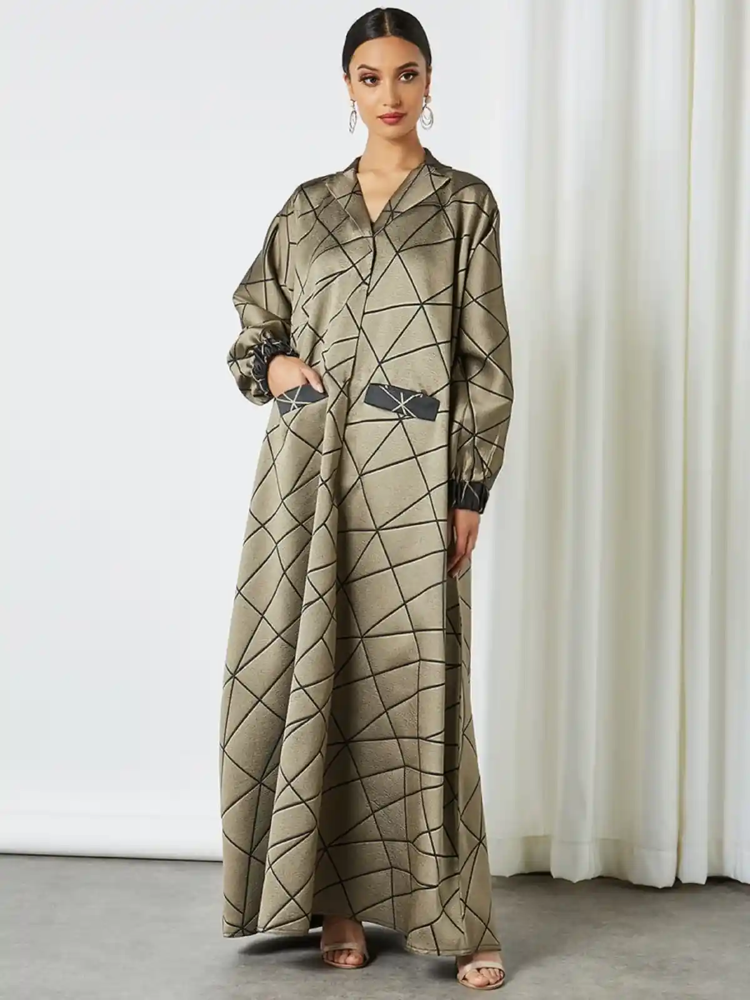
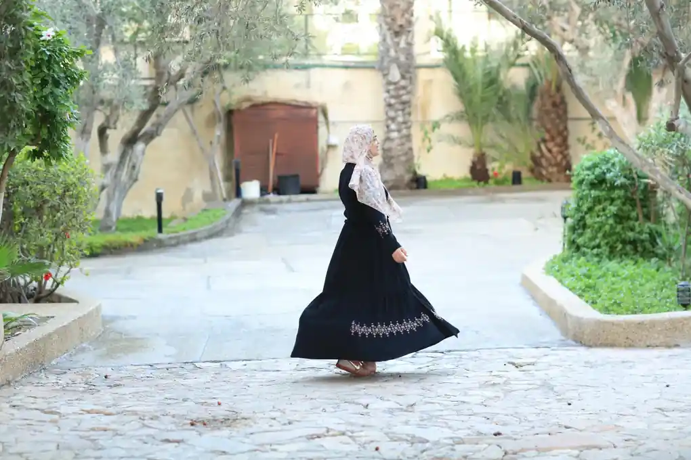
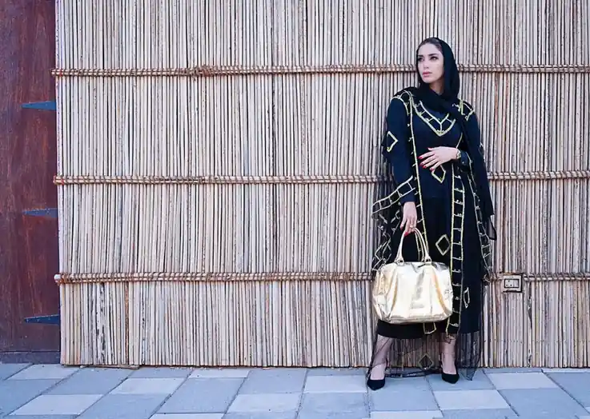
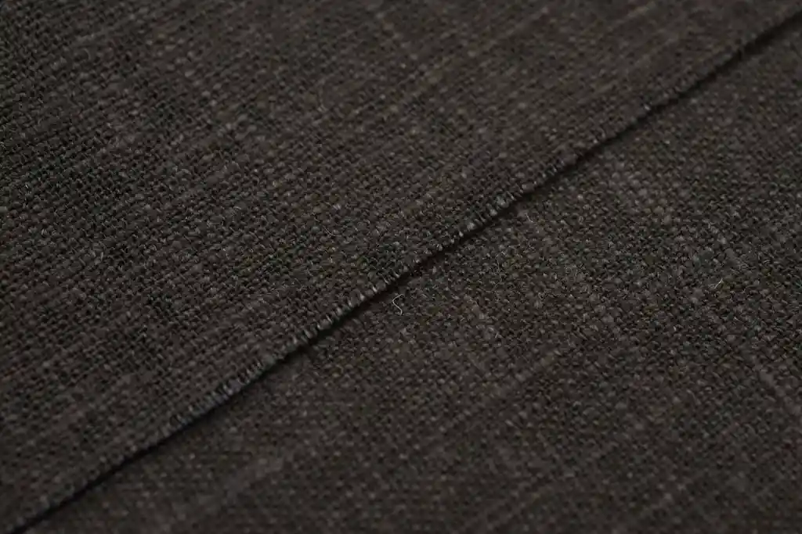
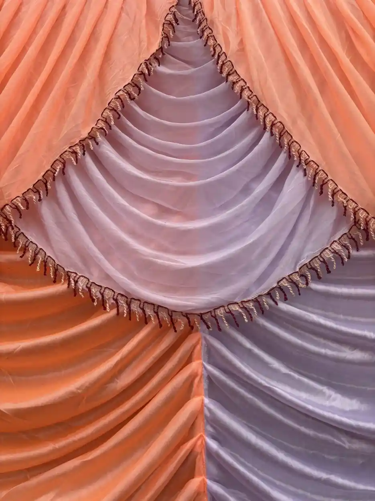
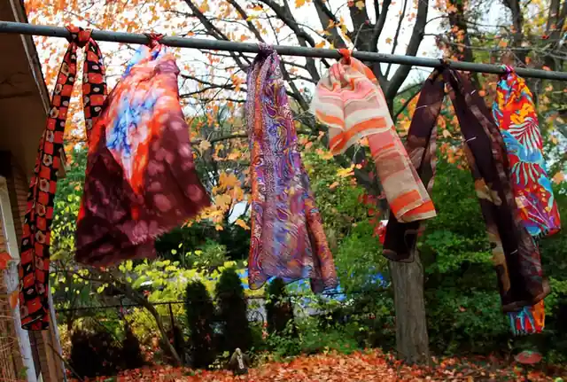
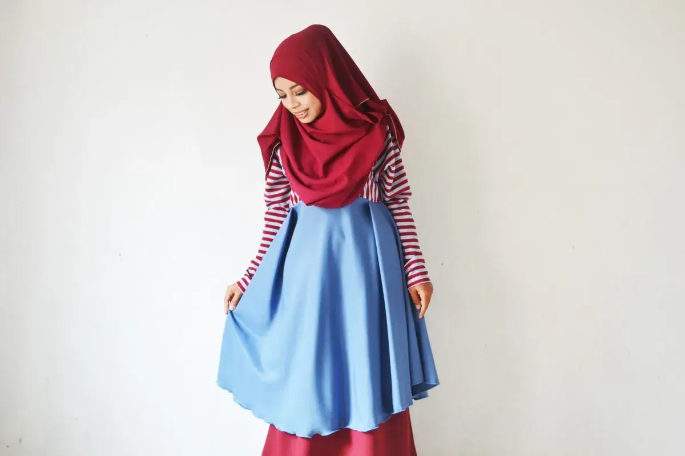
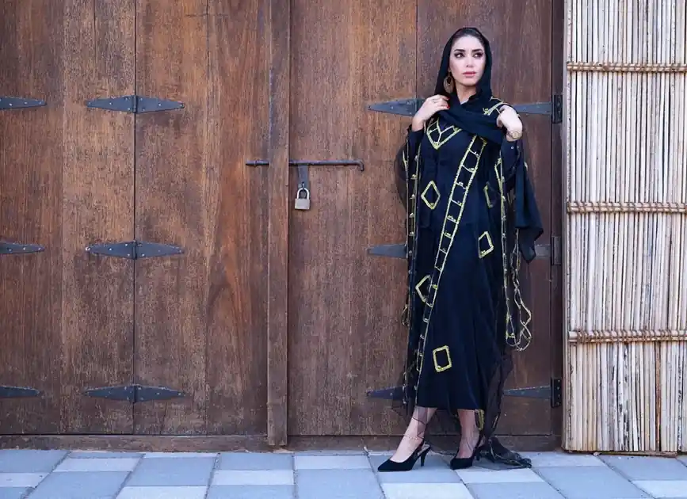

A long abaya, cut to fall to the anklepage one
The Leicester lookbook
Abayas that fall where you want them to
Open and closed abayas, kaftans and wrap scarves in crepe, linen and chiffon. Every piece is listed with its fabric, its length in each size and its price, then posted folded in tissue.
Order your piece See the pieces and prices
page two
Designed in Leicester
Length listed for every size
Posted folded in tissue
No made-to-measure tailoring
What the label makes
Five kinds of piece, each one cut long
The range is small on purpose. Every garment comes in a set run of lengths, so the hem lands at the ankle rather than pooling on the floor or stopping at the shin.
Open abayas with a matching belt
A crepe abaya that hangs open from the shoulder, with a self-fabric belt cut from the same length of cloth. Worn loose over a dress or belted for a narrower line.
Closed abayas with a hidden press-stud front
The front fastens with press studs set behind a placket, so nothing shows when it is done up. It reads as one clean column of crepe from neck to hem.
Kaftans in linen and crepe
Wide-bodied kaftans for warm days, in a washed linen that softens with wear or a crepe that moves more. Both pull on over the head with a shallow V at the neck.
Chiffon and jersey wrap scarves
Long rectangles that wrap twice and still leave a tail. Chiffon is light and slightly sheer; jersey grips the underscarf and needs fewer pins.
Underscarves and tube caps
Stretch caps and tie-back underscarves in four neutrals: ivory, stone, cocoa and black. Sold as a set of two so one can be in the wash.
page three

Crepe that swings when you turnpage four
Featured pieces
The price list, in full
Seven pieces, one price each. No sizes cost more than others, and the price shown is the price charged; delivery is added at the end and is set out on the delivery page.

£68Open abaya, crepe
Open front, matching belt, lengths 52 to 60 in
- £74
Closed abaya, crepe
Hidden press-stud front, lengths 52 to 60 in

£58Linen kaftan
Washed linen, side slits, two lengths

£62Crepe kaftan
Fluid crepe, tie at the back, two lengths
page five
Scarves and underscarves
The finishing layer

£18Chiffon wrap scarf
180 × 70 cm, rolled edge

£16Jersey wrap scarf
170 × 65 cm, modal-blend jersey
- £10
Underscarf, set of two
Tube caps or tie-backs, four neutrals
Every listing gives the fabric, the length for each size and the price, before you ever reach the form.
page six
Open front, worn loosepage seven
How the label works
From the listing to the parcel on your doorstep
Naimah Collections is a small modest-wear label working from Leicester. The idea behind it is plain: long garments are only as good as their length, so every listing gives the measurement from shoulder to hem for each size, alongside the fabric and the weight of the drape. You should be able to pick the right piece from the page alone, without guessing.
An order starts on the order page. You choose up to three pieces, the length or size of each and a colour, then tell us where the parcel is going. The form shows a running total as you choose. When it reaches our mailbox we check the stock against your choices and reply by e-mail, usually within one working day, with a secure link to pay. Nothing is taken from your account before you use that link, and if a colour has run out we say so in the same reply rather than sending a substitute.
Once paid, each piece is pressed, folded in tissue and boxed or sleeved depending on its size. UK parcels go out within two working days with tracking; parcels abroad take a little longer and the delivery page lists the cost and timing for each region.
What we value is the cut and the cloth. Crepe for the abayas is a matte, nida-style weave chosen because it falls straight and does not cling. Linen is pre-washed so it does not shrink after the first wash at home. Chiffon edges are rolled rather than overlocked so they sit flat when pinned.
There are also things the label does not take on. We do not offer made-to-measure tailoring or alterations, we do not make bridal wear, we do not cut children's sizes and we do not sell wholesale. Keeping the range narrow is what lets us list every length precisely.
page eight
Questions people ask
Before you order
How do I choose my abaya length?
Measure from the top of your shoulder, beside the neck, straight down to the floor while wearing the shoes you will wear most, then take off about two centimetres. Pick the abaya length closest to that figure. Our lengths run from 52 in (132 cm) to 60 in (152 cm), and the abaya page gives a height guide for each one.
Is the crepe see-through?
No. The abaya crepe is a mid-weight matte weave and is opaque in daylight in every colour, including taupe. The chiffon scarves are the only sheer pieces in the range, which is why we suggest an underscarf in a matching neutral beneath them.
How long does UK delivery take?
Orders are dispatched within two working days of payment and the tracked UK service usually arrives two to three working days after that. UK delivery is £3.95 per order, whatever the number of pieces.
Do you ship abroad?
Yes. We post to Europe for £12 and to the rest of the world for £18, both tracked. Import charges in the destination country are paid on arrival by the recipient; the delivery page explains this in more detail.
Can I exchange for another size?
Yes, within 28 days of delivery, as long as the piece is unworn, unwashed and has its tag. Send it back and tell us the length you want; we post the replacement as soon as it arrives, with no second delivery charge within the UK.
Do you make bridal pieces?
No. The label does not make bridal wear or one-off occasion pieces, and it does not alter or embellish garments to order. Everything is made in the fixed lengths and colours listed on the site.
page nine

A long draped front panelpage ten
Write to the label
Ask about a length, a colour or a parcel
- Mailbox
style@naimahcollections.com - Where we work
Leicester, England. Posting across the UK, Europe and further afield. - When we reply
Monday to Friday, 9.30 to 17.00 UK time. Messages sent at the weekend are answered on Monday.
page eleven
Ready when you are
Choose the length once, and wear it for years
Pick your pieces, your lengths and your colours on one page. We reply with a payment link and post within two working days of payment.
Not sure which length fits? Read the abaya length guide or the delivery costs first.
page twelve